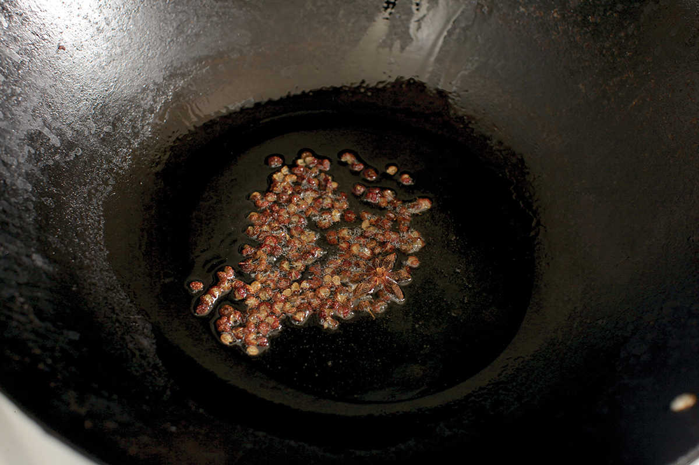
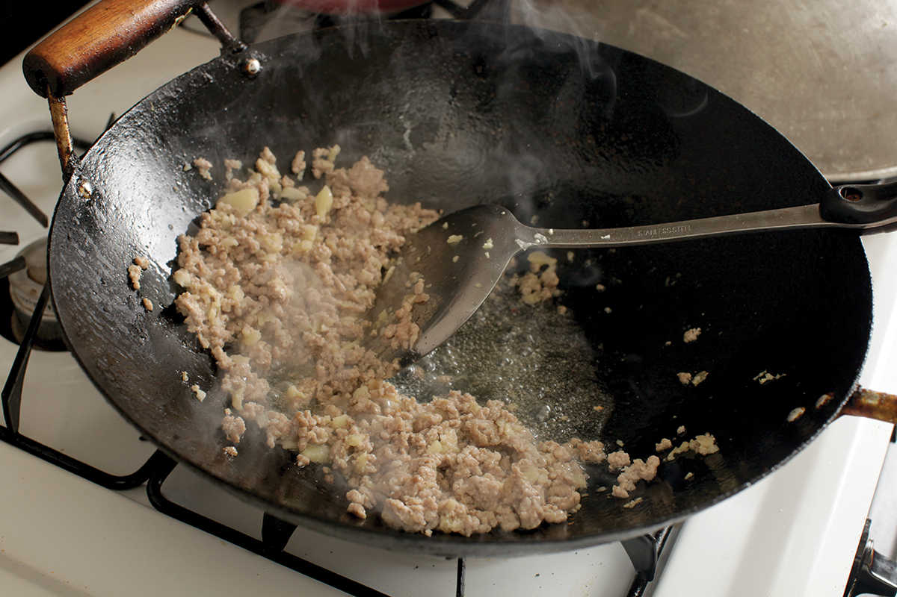
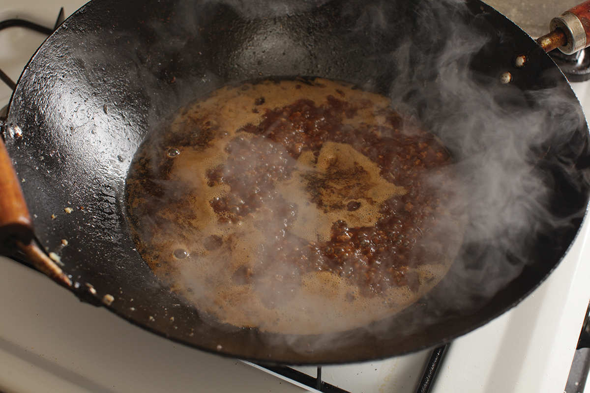
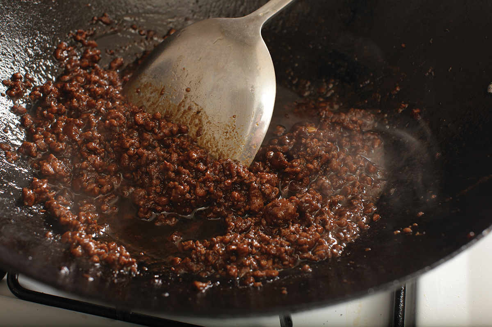
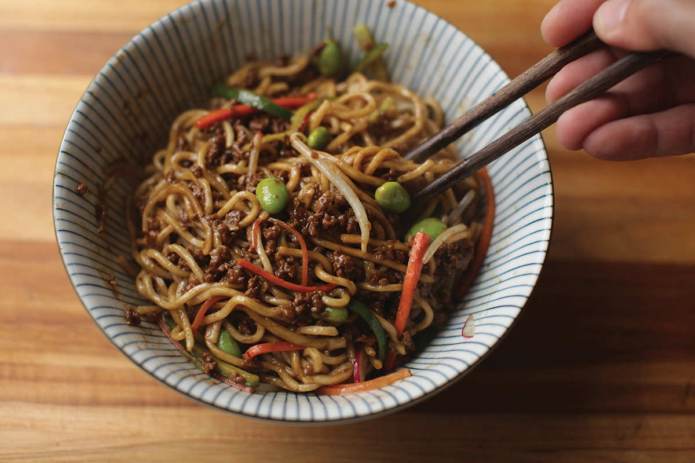

ZHAJIANG MIÀN (BEIJING “FRIED SAUCE” NOODLES)
|
Yield Serves 4 |
Active Time 15 minutes Total Time 30 minutes |
Tianmianjiang is a wheat-based sweet fermented northern Chinese sauce. I use Koon Chun brand, which is widely available at Chinese markets in the United States. If you can’t find it, you can use virtually any fermented bean sauce, such as doubanjiang, a combination of miso paste and hoisin sauce, or Korean doenjang. If you prefer, use 6 ounces of pork belly that you cut into ¼- to ⅛-inch dice in place of the ground pork. (Many classic versions of zhajiang miàn use chunks of fatty pork in place of the ground pork.)
One of the regulars in my mother’s weeknight rotation was a dish she called “Peking noodles,” which she adapted from a recipe she found in the 1962 Joyce Chen Cook Book. It was spaghetti tossed in a meat sauce that was flavored with miso paste, hoisin sauce, and soy sauce, along with julienned cucumbers and bean sprouts (the Joyce Chen recipe also calls for frozen spinach and radishes, but I don’t remember ever coming across a radish until college). It wasn’t until years later, when I looked back through that book, that I realized the dish was meant to be zhajiang miàn, Beijing’s famous “fried sauce noodles.” It all clicked together. In 1962, when Chen was writing her book, hoisin sauce and miso paste would have been exotic but available ingredients, while the tianmianjiang (sweet fermented wheat and soybean paste) used for the Shandong version of zhajiang miàn—widely regarded as the standard in China—would not.
Compared to the versions I’ve had in Beijing, Chen’s 1962 America-Friendly version is not too far off as far as the vegetable toppings go. Cucumber, bean sprouts, and radish are all common. Frozen spinach, not so much—you’re more likely to find fresh soybeans (edamame).
The only moderately difficult to find ingredient in this recipe is the tianmianjiang, but any decently stocked Asian supermarket should have it in the sauces and condiments aisle, and if not, it’s available for order online. There’s a huge amount of regional variation when making this dish—in Sichuan province it’s more likely to be made with spicy doubanjiang, and Cantonese chefs will use hoisin sauce, for instance—so feel free to use whatever fermented bean sauce you happen to have at hand. Joyce Chen’s recommendation of miso paste and hoisin sauce is something you can make out of most Western supermarkets these days.
While any wheat noodle will work for this dish, in Beijing you’ll find zhajiang miàn frequently made with relatively thick, sturdy wheat noodles with a rectangular cross section. You may find these noodles sold as “cumian” at the Asian supermarket. If you can’t find them, dry or fresh Japanese udon would also work.





INGREDIENTS
For the Sauce:
2 tablespoons (30 ml) peanut, rice bran, or other neutral oil
1 tablespoon (5 g) whole Sichuan peppercorns
1 star anise pod
6 ounces (175 g) ground pork (see Notes)
2 teaspoons (5 g) minced garlic (about 2 medium cloves)
2 teaspoons (5 g) minced fresh ginger (about ½-inch segment)
¼ cup (120 ml) sweet bean sauce (tianmianjiang; see Notes)
1 tablespoon (15 ml) dark soy sauce
½ cup (120 ml) water or homemade or store-bought low-sodium chicken stock
To Serve:
1 pound (450 g) fresh wheat noodles
Kosher salt
3 ounces (90 g) cucumber, cut into thin matchsticks
3 ounces (90 g) carrot, cut into thin matchsticks
2 ounces (60 g) radish or watermelon radish, cut into thin half-moons or fine matchsticks
2 ounces (60 g) fresh or frozen edamame, blanched in boiling water for 1 minute
2 ounces (60 g) mung bean sprouts, picked over and blanched in boiling water for 1 minute
DIRECTIONS
1 For the Sauce: Heat the oil, Sichuan peppercorns, and star anise pod in a wok over medium-high heat until sizzling. Reduce the heat to low and cook, stirring, until the spices smell toasted and very fragrant, about 2 minutes. Remove the spices with a slotted spoon and discard, leaving the oil in the wok.
2 Add the pork, garlic, and ginger, increase the heat to high, and cook, stirring and tossing frequently to break up the pork, until the pork and aromatics begin to turn crisp and golden in spots, about 3 minutes.
3 Add the bean sauce and soy sauce and cook, stirring, until the oil separates out of the sauce and starts to sizzle, about 2 minutes. Add the water or stock and simmer until the sauce is reduced to a rich, thick paste and the oil has separated again and started to sizzle, about 15 minutes. Shut off the heat.
4 Meanwhile, cook the noodles in a large pot of salted water according to the package directions. Drain and place the cooked noodles in a large serving bowl. Top with the sauce, cucumber, carrot, radish, edamame, and mung bean sprouts. Toss at the table before serving.